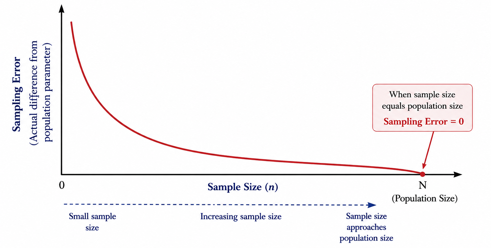
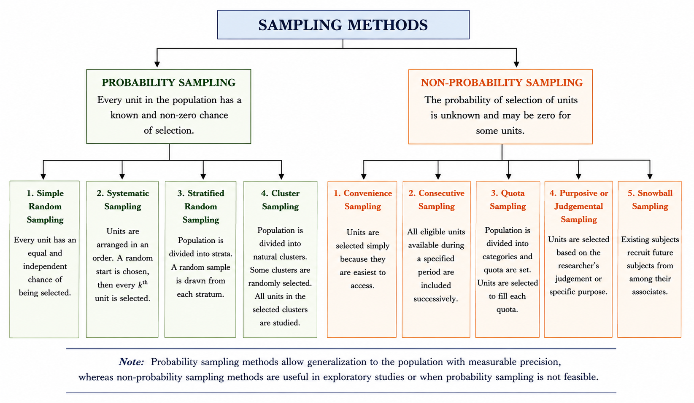
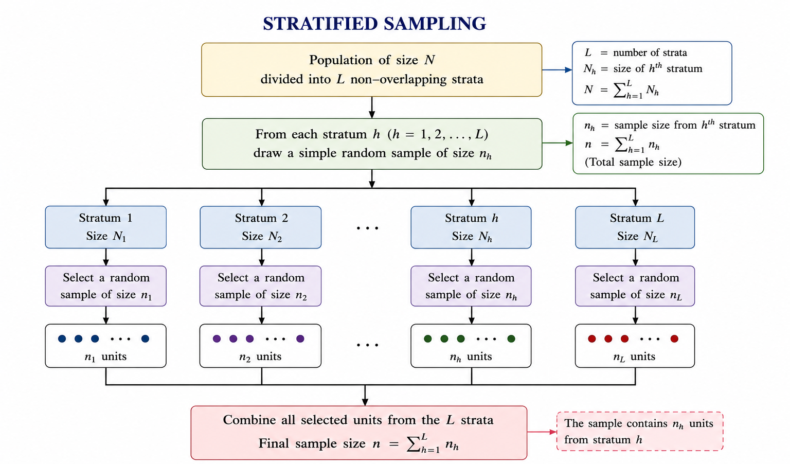
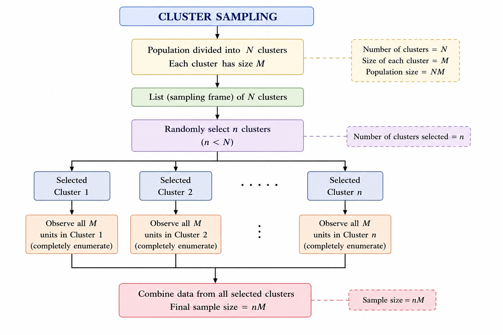

15 Sample survey
Before data can be analysed, they must first be collected in a systematic and reliable manner. The quality of any statistical analysis depends greatly on the quality of the data collected. A poorly designed survey or an unrepresentative sample can lead to misleading conclusions, regardless of the statistical methods used.
In many situations, collecting information from every unit in a population is impractical because it is time-consuming, expensive, or impossible. Instead, information is collected from a sample, which is a subset of the population. The process of selecting this subset is called sampling, and the systematic collection of information from the sample is known as a sample survey.
Sample surveys are widely used in agriculture, government, industry, business, and social sciences to obtain reliable information for research, planning, and decision-making. This chapter introduces the basic concepts of sampling and sample surveys, along with the methods used to select representative samples from a population.
When are sample surveys used?
Sample surveys are particularly useful in the following situations:
- When results are required with maximum accuracy within a fixed budget and by enumerating the minimum number of units.
- When the units under investigation show considerable variation for the characteristic being studied.
- When a total count of the population is not possible, or when the method of measurement requires destruction of the unit (e.g., testing seed germination).
- When the scope of the investigation is very wide and the population is not completely known.
- When time, money, and other resources are limited.
15.1 Basic terminology
Population is the complete collection of individuals, objects, or units about which information is required. The population is defined according to the objective of the study. For example, all rice fields in a district, all households in a village, or all dairy cattle in a state may constitute a population.
Sample is a subset of the population selected for the study. Information obtained from the sample is used to draw conclusions about the entire population.
A sampling unit is the basic unit selected from the population for inclusion in the sample and on which observations or measurements are made. The nature of the sampling unit depends on the objective of the study. For example, in a crop survey, a field or plot may be the sampling unit. In a household survey, a household is the sampling unit. In a livestock survey, an animal may be the sampling unit. In a farmer adoption study, an individual farmer may be the sampling unit.
Census is the complete enumeration of every unit in the population. In a census, data are collected from all population units rather than from a sample.
Sampling unit is the basic unit selected for observation or measurement during the survey. It may be an individual, household, farm, plot, animal, or any other unit depending on the study.
Sample size is the total number of sampling units included in the sample. It is usually denoted by (n).
Sampling design (Sampling method) is the procedure used to select units from the population. A good sampling design ensures that the selected sample is representative of the population, allowing reliable conclusions to be drawn.
Sampling Frame is the complete list or source that identifies all the sampling units in the population from which the sample is selected. It should include every unit in the target population, with no omissions or duplication. For example, if the population consists of all farmers in a village, the voters’ list, farmer registry, or village household register can serve as the sampling frame, provided it includes all farmers.
Parameter is a numerical constant that describes a characteristic of the entire population. Examples include the population mean (\(\mu\)), population variance (\(\sigma^2\)), and population proportion (\(P\))). Population parameters are usually unknown.
Statistic is a numerical measure calculated from sample data. Examples include the sample mean (\(\bar{x}\)), sample variance (\(s^2\)), and sample proportion (\(\hat{p}\)). Statistics are used to estimate the corresponding population parameters.
Estimator is a statistic used to estimate an unknown population parameter from sample data. It is a function of the sample observations and produces an estimate of the parameter.
Expectation (Expected Value) of an estimator is the long-run average of the values that the estimator would take if the same sampling procedure were repeated a very large number of times. It is denoted by \(E(\cdot)\).
Suppose the average yield of a crop in a population is 40 kg per plot. If many random samples of the same size are drawn and the sample mean is calculated for each sample, the sample means will vary from one sample to another. However, the average of all these sample means will be 40 kg per plot. Thus,\(E(\bar{X})=\mu=40\).
An estimator is said to be an Unbiased estimator of a population parameter if its expected value is equal to the true value of that parameter. Thus, if (t) is an estimator of the parameter (), then (t) is unbiased if \(E(t)=\theta\)
Sampling Error is the difference between a sample estimate and the corresponding true population value that arises because only a sample, and not the entire population, is observed. Sampling error is a natural consequence of sampling and decreases as the sample becomes more representative of the population.
Sampling errors arise primarily due to: (i) faulty selection of samples (ii) substitution of sampling units already included in the study (iii) faulty demarcation of sampling units (iv) improper choice of statistical methods for estimating parameters. As long as sampling errors are sufficiently small, the sampling method can be reliably used for studying a population. Sampling errors are absent in a complete census. Increasing the sample size decreases the sampling error.
Non-sampling error are the errors other than sampling errors - such as those arising through non-response, incompleteness, or inaccuracy in recording. Data obtained from a census are free from sampling errors but are still subject to non-sampling errors. Sample survey data are subject to both types of errors.
Non-sampling errors can occur due to: (i) faulty planning and definitions - inadequate data specifications, errors in locating units, lack of trained personnel; (ii) response errors - misunderstanding of questions, or bias on the part of the interviewer or respondent; (iii) non-response bias - where full information is not obtained; and (iv) errors in coverage, compilation, and publication.
15.2 Confidence Interval
A confidence interval (CI) is a range of values that is likely to contain the true value of a population parameter. The concept is mainly important when you are estimating a population value from the sample. The confidence level of the interval is \(100(1 - \alpha)\), where \(\alpha\) is the level of significance.
For example:
- If (\(\alpha\) = 0.05), the confidence level is 95%.
- If (\(\alpha\) = 0.01), the confidence level is 99%.
A 95% confidence interval means that if the same study were repeated many times and a confidence interval were calculated from each sample, about 95% of those intervals would contain the true population parameter. Similarly, a 99% confidence interval would contain the true parameter in about 99% of repeated studies.
Note: A common misconception is that “if an experiment is repeated 100 times, the same conclusion will be obtained exactly 95 times.” This is not the correct interpretation. The confidence level refers to the proportion of confidence intervals that would contain the true population parameter when the study is repeated very large number of times not exactly “100”.
In simple terms, a 95% confidence interval is a range of plausible values for the true population parameter based on the sample data.
15.3 Principal Steps in a Sample Survey
Define the objectives of the survey.
Define the target population to be studied.
Prepare the sampling frame and identify the sampling units.
Identify the information (data) to be collected.
Design the questionnaire or schedule for data collection.
Select the method of data collection, such as personal interview, telephone interview, mail survey, or online survey.
Conduct a pilot survey (pre-test) to identify and correct any deficiencies in the questionnaire or survey procedure.
Choose an appropriate sampling design and determine the required sample size.
Organize and conduct the field survey, including procedures for handling non-response.
Scrutinize, edit, code, tabulate, and analyse the collected data.
Interpret the results and prepare the survey report.
Document and archive the survey methodology and findings for future reference.
15.4 Methods of sampling
The various methods of sampling can be grouped as shown below.

Probability sampling
Probability sampling is the scientific method of selecting samples according to the laws of probability, in which each unit in the population has a definite, pre-assigned probability of being selected. This may mean:
- All units have an equal chance of being chosen.
- Units are sometimes selected with different probabilities.
- The probability of selection is proportional to the size of the unit.
Simple random sampling
Simple Random Sampling (SRS) is the most basic and widely used probability sampling method. It is appropriate when the population is relatively homogeneous with respect to the characteristic being studied. In SRS, every unit in the population has an equal and independent chance of being selected, and every possible sample of a given size has an equal probability of selection.
There are two types of simple random sampling:
Simple Random Sampling With Replacement (SRSWR): After a unit is selected, it is returned to the population before the next draw. Therefore, the same unit may be selected more than once.
Simple Random Sampling Without Replacement (SRSWOR): After a unit is selected, it is not returned to the population. Hence, each unit can be selected only once. This is the method most commonly used in practice.
To select a simple random sample, all population units are assigned unique identification numbers from 1 to N. Then, n numbers are selected completely at random using methods such as the lottery method, random number tables, or computer-generated random numbers.
Suppose a college has 300 students, and we wish to select a simple random sample of 100 students. Each student is assigned a unique number from 1 to 300. A random number generator is then used to select 100 distinct numbers. The students corresponding to these numbers constitute the simple random sample without replacement (SRSWOR).
Stratified random sampling
In stratified random sampling, the population is first divided into non-overlapping groups, called strata, based on a characteristic such as age, gender, region, or crop variety. The units within each stratum are relatively homogeneous with respect to the characteristic of interest. A simple random sample is then selected independently from each stratum. This ensures that all strata are represented in the final sample and generally improves the precision of the estimates.
The number of units selected from each stratum may be proportional to the size of the stratum or determined using other allocation methods depending on the objectives of the survey.
An agricultural scientist wishes to estimate the average wheat yield of a district. The district has three types of farms: small farms (200 farms), medium farms (300 farms), and large farms (100 farms). Since farm size is likely to influence crop yield stratification can be done using farm size, the farms are first divided into these three strata. A simple random sample is then selected independently from each stratum, for example, 20 small farms, 30 medium farms, and 10 large farms. The selected farms together constitute the stratified random sample.

Systematic sampling
In systematic sampling, the population units are first arranged in an ordered list. Instead of selecting every unit at random, only the first unit is selected randomly. The remaining units are then selected at regular intervals throughout the list. This method is simple to implement and ensures that the sample is spread evenly over the entire population.
The interval between two successive selected units is called the sampling interval and is denoted by (k). It is calculated as
\[k=\frac{N}{n}\]
where N is the population size and n is the required sample size. After calculating k, a random starting number between 1 and k is chosen. Beginning with this unit, every k th unit is included in the sample until the required sample size is obtained.
A researcher wishes to select a sample of 20 students from a list of 300 students. The sampling interval is \(k=\frac{300}{20}=15\). A random starting number between 1 and 15 is selected, say 8. The sample then consists of students numbered 8, 23, 38, 53, 68, 83, …, continuing by adding 15 each time until 20 students have been selected.
Cluster sampling
In cluster sampling, the population is divided into naturally occurring groups called clusters. Instead of selecting individual units directly, a random sample of clusters is selected. Data are then collected from all units within the selected clusters. In cluster sampling the sampling units are clusters. The selected clusters are completely enumerated.
Cluster sampling is particularly useful when a complete sampling frame of individual units is not available, but a list of clusters is readily available. It reduces the time and cost of data collection, especially when the population is geographically dispersed.
Suppose a researcher wishes to estimate the average yield of paddy farms in a district. A complete list of all farms in the district is not available, but a list of all villages is available. Each village is treated as a cluster. A random sample of villages is selected, and data are collected from all farms in the selected villages.

Non-probability sampling
In non-probability sampling, the researcher selects the sample based on subjective judgement rather than random selection. This approach excludes some population members from participation and does not allow probability-based inference to the wider population.
Convenience sampling
In convenience sampling, researchers select units based on their accessibility and ease of reach. The samples are easy to collect but may not be representative of the entire population.
Example 13.5: Surveying people at a nearby shopping centre or park would be an example of convenience sampling.
Consecutive sampling
Consecutive sampling is similar to convenience sampling, but the researcher collects data from one group over a period of time before moving on to the next group. This allows patterns over time to be captured.
Example 13.6: A company stops people in a busy area on different days over several weeks to distribute promotional materials and collect responses - moving from one location to another consecutively.
Quota sampling
Quota sampling divides the population into subgroups and assigns a quota - a specific number to be sampled - to each subgroup. Researchers collect data until each quota is filled. While it allows for controlled representation across groups, it does not involve random selection and may introduce selection bias.
Example 13.7: A market research team studying a new cosmetic product decides to interview 40 women aged 20–30 and 20 men aged 25–35 at a shopping mall. Researchers approach shoppers until each quota is filled. The selection within each group is not random.
Purposive (judgement) sampling
In purposive sampling, the researcher deliberately selects units that are considered most relevant or informative for the study. This is widely used in qualitative research or when expert opinion is required. However, it can introduce researcher bias and results may not be generalisable.
Example 13.8: A researcher studying high-performing farmers in a village deliberately selects only those farmers who have received multiple awards for agricultural excellence, as they are considered most relevant to the research topic.
Snowball sampling
Snowball sampling, also known as chain-referral sampling, is used when the target population is hard to reach - such as marginalised or hidden communities. Each identified member of the population is asked to refer the researcher to other potential participants, causing the sample to “snowball” in size.
Example 13.9: A researcher studying the experiences of undocumented immigrants in a city interviews one such individual and then asks that person to refer others who may be willing to participate. This process continues, with each participant referring the researcher to more potential subjects.
Limitations of sampling
- Samples may not fully cover the population, and consequently the results may not be exact.
- Sampling methods are not reliable unless trained and qualified persons are employed for data collection.
- Planning and execution must be done carefully, or the data may lead to misleading results.
Historical Insights
The Origin of Sample Surveys - Kiaer’s Representative Method
The idea that a carefully chosen sample could stand in for an entire population - without the expense and labour of a complete census - was not obvious to statisticians in the nineteenth century. It was a Norwegian statistician named Anders Nicolai Kiaer who first formally proposed this idea in 1895, calling it the Representative Method. Kiaer presented his method at the International Statistical Institute, arguing that a partial investigation, if designed carefully, could yield results as reliable as a full census. His proposal was initially met with scepticism by fellow statisticians who believed that only a complete enumeration could be trusted. (Kiaer1895?)
It took decades before the idea gained wide acceptance. Arthur Lyon Bowley later placed Kiaer’s method on a firm mathematical footing by introducing random sampling and probability-based inference to survey work in the early twentieth century. (Bowley1906?) The modern theory of sample surveys was then comprehensively developed by Prasanta Chandra Mahalanobis in India, who pioneered large-scale sample surveys in the 1930s and 1940s through the Indian Statistical Institute, demonstrating that national-level estimates of crop production and population could be obtained efficiently through sampling. (Mahalanobis1944?)
Today, the sample survey is the backbone of agricultural statistics, public health research, national economic planning, and opinion polling worldwide - all built on Kiaer’s initially controversial idea from a statistical conference in 1895.
Quotes to Inspire
“Facts are stubborn, but statistics are more pliable.” - Mark Twain